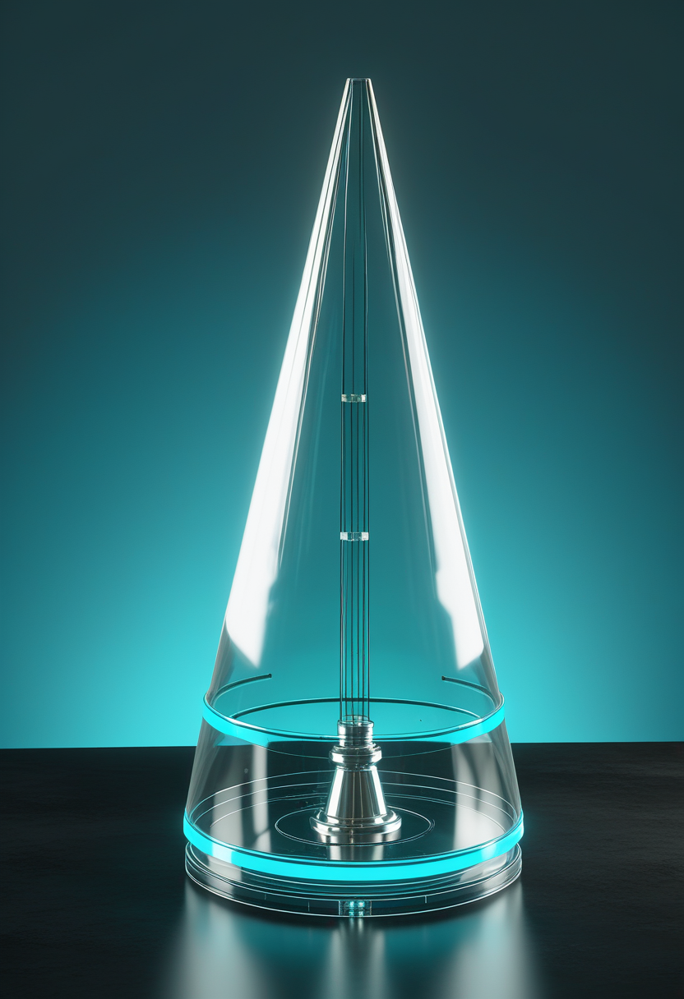
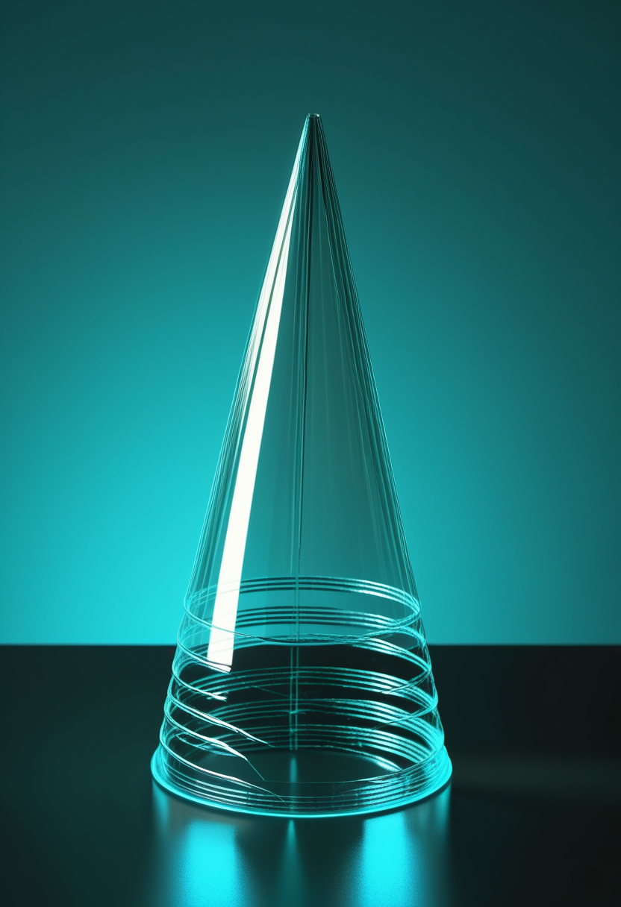
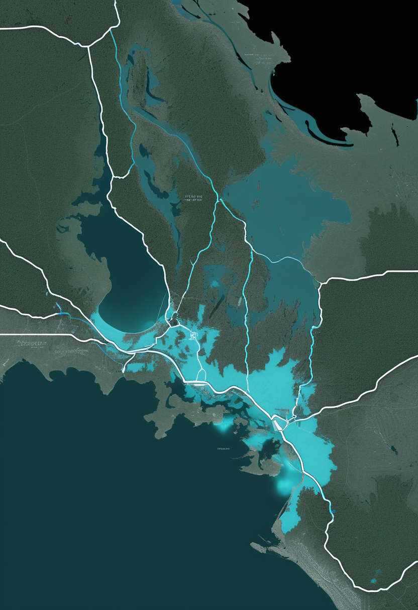
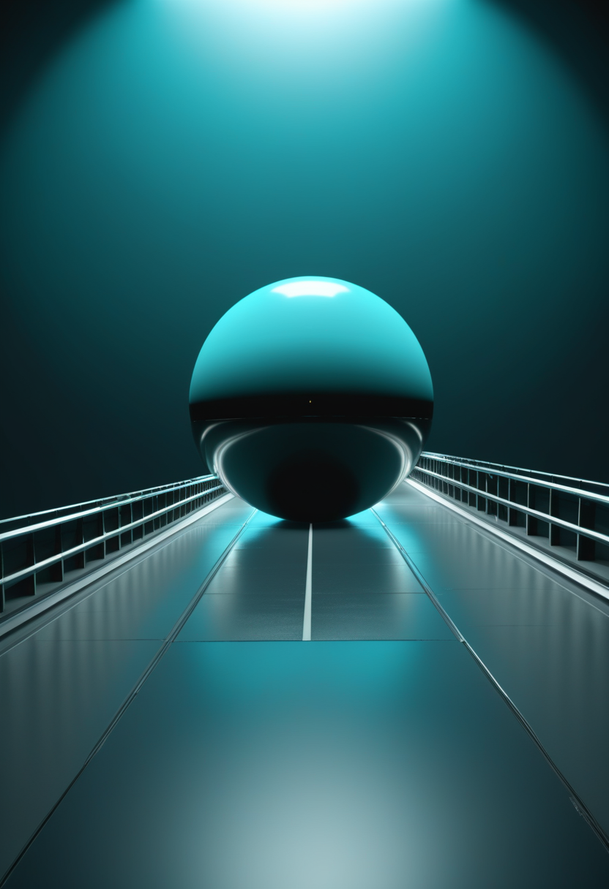
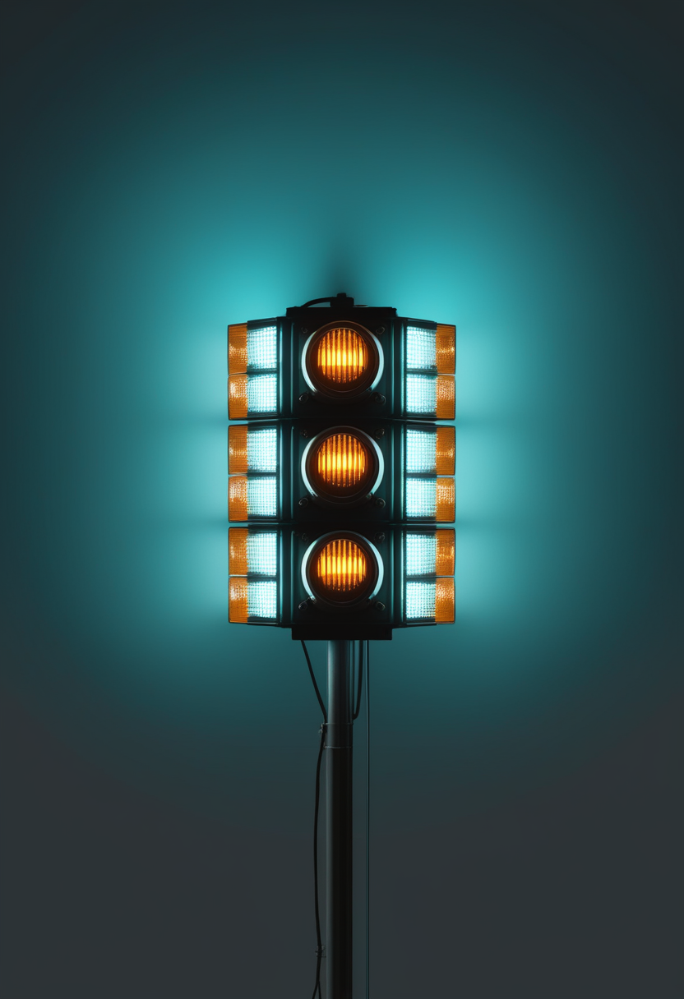
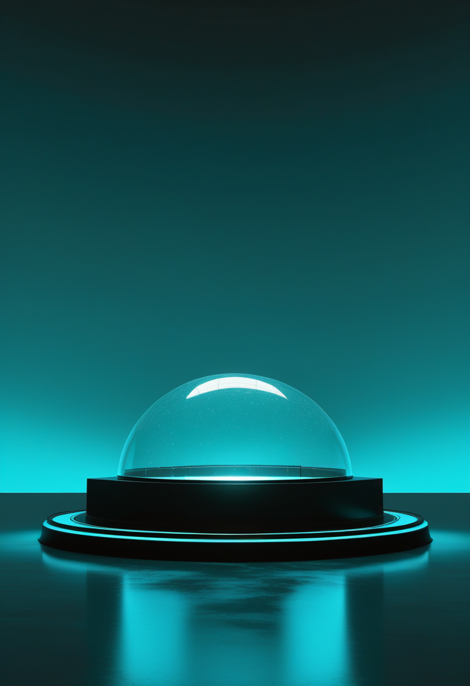
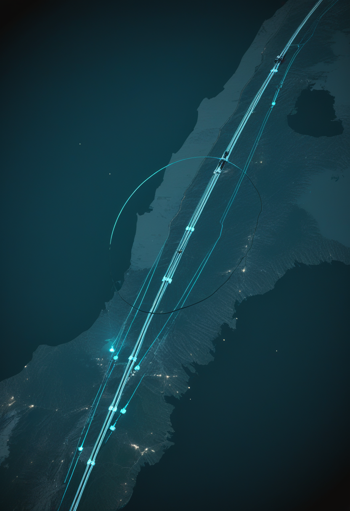
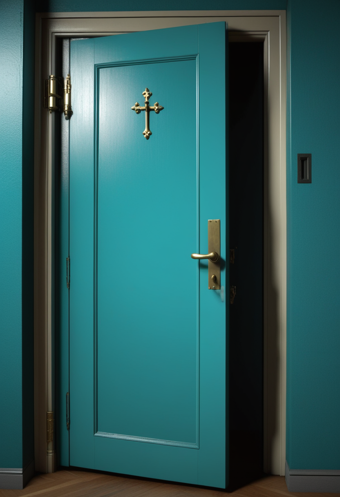

木曜日の便り。カナダ・オタワ大学とドイツ・マックスプランク光科学研究所の共同チームは8月6日、Optica誌への発表で、レーザーを使わず太陽光から量子もつれ光子対を直接生成できることを世界で初めて実証したと報告した。円錐形の集光器で集めた太陽光を非線形結晶に通し、94%の忠実度でベル不等式違反を確認、衛星による省電力な量子暗号通信への応用が期待される。命の章では、SMA啓発月間(8月)に合わせ成人患者の未満たされるニーズや小児・成人間の医療移行ギャップを議論する記事が相次ぎ、ウェールズ保守党は新生児スクリーニングの地域格差是正を政府に要求した。自由の章では、韓国政府が「7大SEED戦略」を発表し、2035年までのBCI製品商業化と2030年の月面着陸を国家目標に掲げている。基盤の章では、川崎市が昨年より2カ月早くインフルエンザ流行期に入り、全国の急性呼吸器感染症報告数も増加に転じ、福島県では手足口病の警報レベルが4週連続で続いている。そして美の章では、大手テック企業がAIの意識研究に公式に踏み出す一方、哲学者らはGuardian紙で「AIの道徳的地位を軽視すべきでない」と提起した ― 太陽光という身近な自然現象が量子科学の常識を覆した一日、季節を先取りする感染症の足音と、AIをどう遇するかという新しい問いが同居する朝となった。

オタワ大学のRobert Boyd氏が率いる理論チームと、ドイツ・マックスプランク光科学研究所のHanieh Fattahi氏が率いる技術チームは8月6日、Optica誌(13巻1508-1514ページ)に、レーザーを使わず太陽光から量子もつれ光子対を直接生成することに世界で初めて成功したと発表した。家庭用フレネルレンズで集めた太陽光を円錐形のガラス製集光器で髪の毛ほどの太さの光ファイバーに集約し、非線形結晶で自発的パラメトリック下変換を起こして光子対を生成。量子状態トモグラフィで約94%の忠実度を確認し、ベル不等式違反という量子もつれの決定的証拠も得られた。研究チームは、衛星が豊富な宇宙の太陽光を利用し、搭載レーザーなしで安全な暗号鍵を生成できる可能性を指摘している。
SMA啓発月間(8月)に合わせ、NeurologyLiveは脊髄性筋萎縮症(SMA)成人患者の治療における未解決課題をまとめた専門家パネル記事を掲載した。コンビネーション療法のさらなる研究、より包括的な新生児スクリーニング体制、早期診断・早期治療の重要性が指摘されており、Cure SMAも成人当事者への聞き取りを通じてニーズと優先事項の把握を進めているという。

ウェールズ保守党は、脊髄性筋萎縮症(SMA)の新生児スクリーニングをめぐり、ウェールズ政府に対し英国内他地域と同等の機会を確保するよう臨床医・英国国家スクリーニング委員会と緊急に連携するよう求めた。早期診断が治療成果に大きな差をもたらすとして、「居住地によって医療アクセスに差が生まれる事態」を防ぐべきだと訴えている。

SMA啓発月間に合わせ、NeurologyLiveは小児期に治療を開始した患者が成人期を迎える中で生じる医療体制の「移行期ギャップ」に焦点を当てた記事を掲載した。多職種連携によるケア体制の構築や、成人期特有のフォローアップ体制整備の必要性が論じられている。
成人期のSMA診療は、専門家パネルによる課題整理・小児から成人への移行期ケア・新生児スクリーニングの地域格差是正という三つの角度から同時に問われている ― 早期診断の恩恵をどう成人期まで橋渡しするかが、次の焦点になりつつある。
韓国大統領府は8月12日、李在明大統領主宰の会議で将来技術を牽引する「7大SEED戦略」を発表した。国産小型モジュール炉(SMR)の2035年までの商用展開、2030年の月面着陸(2032年に第2次着陸ミッション)、2029年までの国産100量子ビット量子コンピュータ開発と並び、思考だけで文字入力や機器操作を可能にするBCI製品の2035年までの商業化が国家目標に掲げられた。AI創薬・自動化ラボ・先端遺伝子細胞治療の推進も盛り込まれている。
韓国が国家戦略としてBCI商業化を月面着陸・量子コンピュータと並ぶ目標に据えたことは、脳を読み取る技術がもはや一企業の実験ではなく、国家の産業政策の一部になりつつあることを示している。
川崎市は8月12日、インフルエンザが流行期に入ったと発表した。8月3~9日の感染症発生動向調査で定点医療機関当たりの患者報告数が1.61人となり、流行開始の目安(1.00人)を超えたためで、昨シーズンの流行入りより約2カ月早いという。市健康福祉局は手洗い・うがいの徹底やマスク着用、発熱時の早期受診を呼びかけている。
全国の急性呼吸器感染症(ARI)の定点当たり報告数は直近週で44.96人となり、前週から増加に転じたと報じられた。7月下旬から8月上旬にかけては40人台前半で推移していたが、再び増加傾向が確認されている。

福島県内の手足口病患者報告数は、7月19日時点で定点医療機関当たり9.21人となり、警報レベルの目安(5人)を4週連続で上回った。地域別では県中地域が20.67人、いわき地域が13.80人と特に高く、県は手洗いの徹底やタオルの共用を避けるなど家庭内感染対策の呼びかけを続けている。
インフルエンザの早期流行入り・全国的な呼吸器感染症の増加・地域限定の手足口病警報が同じ週に重なった ― 季節の境界がずれ始めている兆候として、医療現場の備えが問われている。
オタワ大学とマックスプランク光科学研究所の共同チームは、円錐形のガラス製集光器で集めた太陽光を非線形結晶に通し、自発的パラメトリック下変換によって量子もつれ光子対を生成することに成功した。量子状態トモグラフィで約94%の忠実度を確認し、ベル不等式違反という量子もつれの決定的証拠も得られている。レーザーという量子光学の前提を覆す発見で、衛星による省電力な量子暗号通信への応用が期待される。

NASAエイムス研究センター(カリフォルニア州)は8月12日、宇宙飛行士訓練や機体テストに使う「垂直運動シミュレーター」をアナログからデジタル技術へ全面刷新したと発表した。4Kプロジェクター搭載の新型ドームでほぼ20/20視力相当の鮮明な映像を実現し、軽量・交換可能な機体パーツの導入で設定変更時間を半減、画像の自動配置・色調整で手作業も大幅に削減した。月面着陸・火星探査・次世代エアタクシー開発など複数の次世代ミッションを支える基盤設備として位置づけられている。

NASA宇宙飛行士マイク・フィンケ氏が8月12日、NASAでのキャリアを終え退任した。2004年のソユーズTMA-4(ISS第9次遠征、船外活動4回)、2008年のソユーズTMA-13(第18次遠征船長)、2011年のスペースシャトル・エンデバー最終飛行(STS-134、ロボットアーム操作)、そして2025年8月から2026年1月まで務めたスペースX Crew-11(第73・74次遠征)まで、4回の宇宙飛行を経験した。退任後も探査分野への関与を続け、次世代のエンジニア・宇宙飛行士の育成に携わる意向を示している。
太陽光という最も身近な自然現象が量子科学の前提を覆した一方、月面探査を支える地上設備の刷新や、宇宙飛行のキャリアを終えた飛行士から次世代への引き継ぎが静かに進んでいる ― 発見と継承が同じ章に並ぶ一日。

Googleを含む大手テクノロジー企業が、これまで距離を置いてきたAIの意識研究に公式に取り組み始めている。2022年にGoogleのエンジニア、ブレイク・レモイン氏がAIの感覚を主張して解雇された当時とは対照的な転換だ。一方でMicrosoft AI社のムスタファ・スレイマンCEOは、AIが意識を持つかのような錯覚を助長する表現を業界に控えるよう警鐘を鳴らしており、「感情を理解している」かのような擬人化した宣伝を避けるべきだと主張する。企業が意識の探求に踏み出す動きと、その「見かけ上の意識」の危険性を警告する動きが同時に進んでいる。
哲学者ウィリアム・マッカスキル氏と認知科学者ルシウス・カヴィオラ氏は7月19日、The Guardian紙への寄稿で、AIシステムが道徳的配慮の対象(モラル・ペイシェント)となる可能性は依然として不確実であり、軽視すべきではないと訴えた。現在の最大級AIモデルの「脳規模」はマウス程度にまで達しており、5~10年で人間の脳規模に到達しうるとの試算も紹介。両氏は意識の有無という論争に決着をつけるのではなく、万一の場合に備えてAIのストレス対応やウェルネスチェックといった「福祉」策を今のうちに実装すべきだと提案している。哲学者デイヴィッド・チャーマーズ氏も、今後10年以内に意識を持つLLMが登場する可能性は無視できないと見積もっているという。
AIの意識を「研究する」企業と、その道徳的地位を「軽視すべきでない」と説く哲学者 ― 立場は違えど、AIをどう遇するかという問いに人類が本格的に向き合い始めたことは共通している。
2026年8月6日にOptica誌で発表された研究により、オタワ大学とマックスプランク光科学研究所の共同チームは、レーザーを使わず太陽光から量子もつれ光子対を生成できることを世界で初めて実証した。94%の忠実度でベル不等式違反を確認し、衛星による省電力な量子暗号通信への応用が視野に入る。命の章では、SMA啓発月間に合わせ成人患者の未満たされるニーズと小児・成人間の医療移行ギャップが議論され、ウェールズ保守党は新生児スクリーニングの地域格差是正を求めた。自由の章では、韓国政府が「7大SEED戦略」で2035年までのBCI製品商業化と2030年の月面着陸を国家目標に掲げた。基盤の章では、川崎市が例年より2カ月早くインフルエンザ流行期に入り、全国の急性呼吸器感染症報告数も増加に転じ、福島県では手足口病の警報レベルが4週連続で続いている。そして美の章では、大手テック企業がAIの意識研究に公式に踏み出す一方、哲学者らは「AIの道徳的地位を軽視すべきでない」とGuardian紙で提起した ― 太陽の光がもたらした量子科学の新発見から、AIとどう向き合うかという問いまで、身近な自然と最先端の科学が地続きであることを実感させる一日となった。
では、また明日の朝に。 — JaH